|
STM32 Motor Control SDK MCFW-6.4.1
Software Development Kit to build applications driving PMSM Motors with STM32
|
|
STM32 Motor Control SDK MCFW-6.4.1
Software Development Kit to build applications driving PMSM Motors with STM32
|
Prev: STM32 motor control SDK overview ↤| Table of Contents |↦ Next: Motor Profiler Application Note
STM32 microcontrollers offer the performance of the industry-standard Arm® Cortex®-M cores running either field-oriented control (FOC) or 6-step modes, widely used in motor-control applications such as high-performance drives for air conditioning, home appliances, drones, building and industrial automation, medical, and e-bike. The STM32 motor-control software development kit (MC SDK) is part of the STMicroelectronics motor-control ecosystem, which offers a wide range of hardware and software solutions for motor-control applications. It is referenced as X-CUBE-MCSDK according to the software license agreement applied. It includes the:
The STM32 motor-control software development kit allows evaluation of the performance of STM32 microcontrollers in applications driving one or two three-phase motors within the STM32 ecosystem. The ST MC workbench software tool runs on a PC. It reduces design time and effort when configuring the STM32 MCU firmware library. Through its graphical user interface, it can generate all the configuration files needed for an application. In addition, ST MC workbench interfaces with STM32CubeMX to take advantage of its ecosystem and customize embedded applications.
The MC SDK is used for the development of motor-control applications running on STM32 32-bit microcontrollers based on the Arm® Cortex®-M processor. The following table presents the definition of acronyms that are relevant for a better understanding of this document.
| Acronym | Description |
|---|---|
| GUI | Graphical user interface |
| IDE | Integrated development environment |
| FOC | Field-oriented control |
| FW | Firmware |
| MC | Motor control |
| MC WB | Motor-control Workbench (STMicroelectronics software tool) |
| MC BM | Motor-control Board Manager (STMicroelectronics software tool) |
| MC BD | Motor-control Board Designer (STMicroelectronics software tool) |
| MP | Motor Profiler (STMicroelectronics software tool) |
| PMSM | Permanent-magnet synchronous motor |
| PWM | Pulse-width modulation |
| SDK | Software development kit |
| BLDC | Brushless DC |
A suitable ST motor-control ecosystem environment includes:
Refer to the STM32 motor-control software development kit (MC SDK) data brief at https://www.st.com/content/st_com/en/ecosystems/stm32-motor-control-ecosystem.html and the release note for more details
The STMicroelectronics motor-control ecosystem runs on a PC with Windows® 10. The following PC software tools are correctly installed:
Refer to the respective user manuals for proper installation.
The connection of the STMicroelectronics application board to the PC requires a USB Type-A connector. Refer to the description of the application board for details on the USB cable. A dedicated description card is delivered with each STMicroelectronics application board for proper installation. For more details, refer to the user manual of the board available at www.st.com. The selected hardware can be one of the three setups:
Connect a USB cable between the PC and the STMicroelectronics application board and the JTAG/SWD programming cable if it is different from the USB cable.
The Motor Profiler is a tool that automatically measures the electrical parameters of PMSM motors. The specification of an electric motor may not be known and is determined in less than a minute. The algorithm determines the motor parameters needed to configure the STM32 MCU firmware library: stator resistance Rs, stator inductance Ls, back EMF constant, motor inertia, and friction. It allows you to save the configurations you made. This tool is not mandatory to build the project, it is intended if you do not know the motor parameters or if you need to have better precision.
The Motor Profiler is described in full details in the Motor Profiler Application Note section.
After clicking on the workbench icon, you arrive on the home page. You can either choose recent projects, click on the button “New project”, load a project, or take example projects as you can see in the following figure.
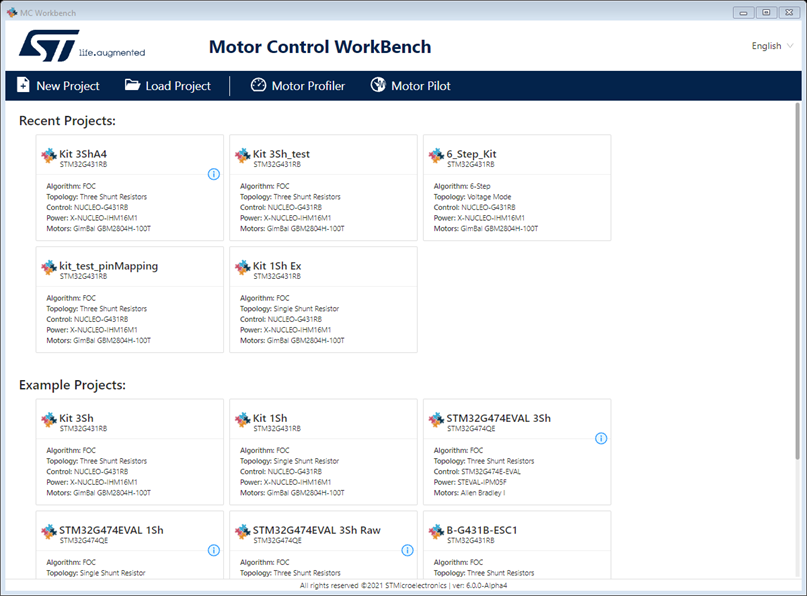
Provide hardware setup information in the New Project window once it appears as shown in the figure that follows.
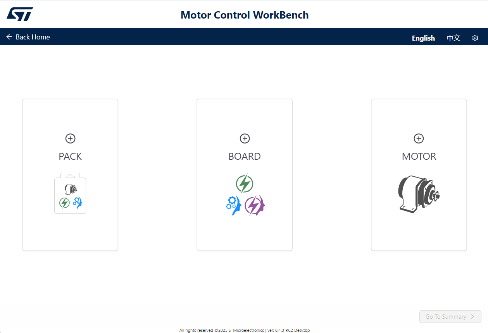
A new project starts with the selection of your hardware configuration. Except when starting with a pack, you need to select a board and a motor by clicking on the respective window. The board selection will allow you to select among all the possible boards defined in your current version of the MCSDK. It could be :
Depending on your first choice, the workbench will propose you to select the complementary board (control or power) and/or the motor.
The board selection is made easier with various filters available and the bookmarking capability.
If you select a control board with a different connector than your power board, an orange triangle will pop-up above your power connector allowing you to select and Adapter.
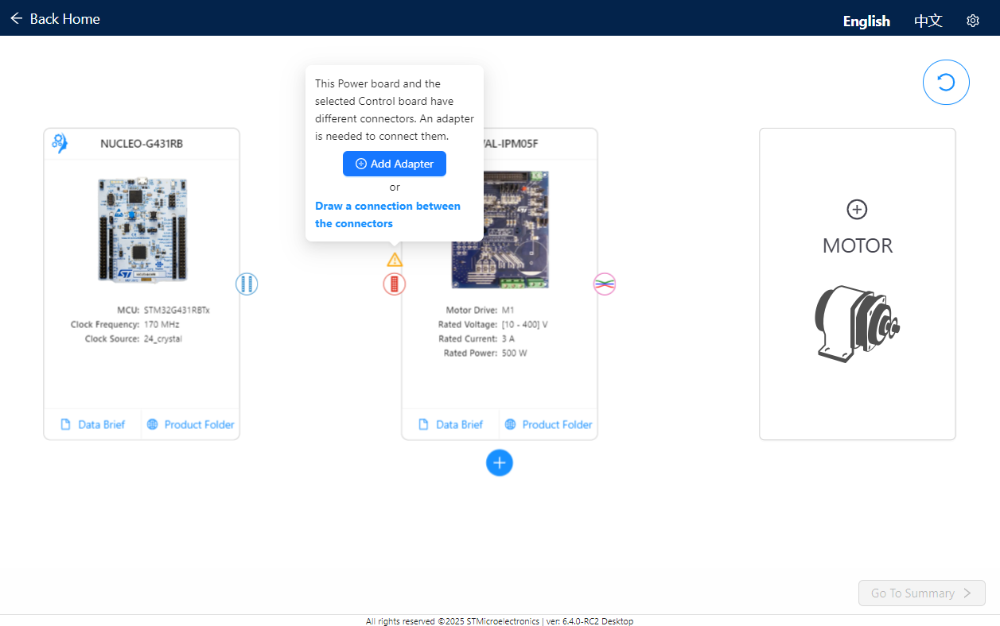
The Dual drive configuration is made possible with the selection of a second power board thanks to the "Plus" button below the first power board. You are always free to remove the default connection between two boards. If you want to select another connector, simply drag and drop a line between a control connector to the desired power board. The addition of a second motor follows exactly the same concept.
The overall configuration is now much clearer with a graphical representation of the various connections as shown in the figure that follows. It is even more true for the dual drive configuration.
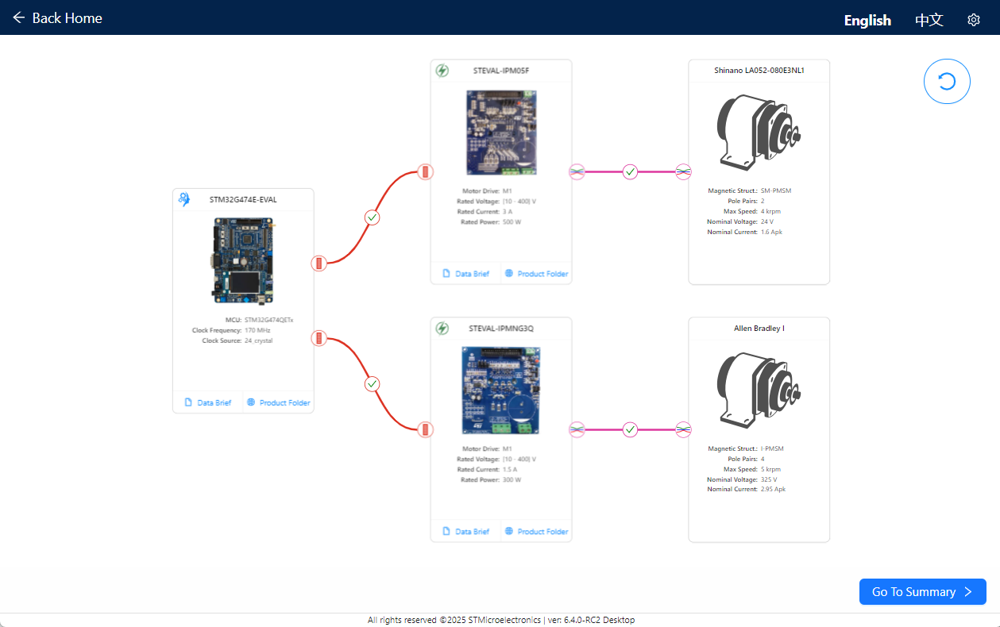
When your board(s) and motor(s) are selected with or without an optional adpater, you can click on the "Go To Summary" button. Depending on the features accessible once the power and the control board are plugged together, you will have the choice to select which type of algorithm you want to drive your motor with, FOC or 6-Step. Once your algorithm is selected, you can press the “Create” button, as shown in the figure that follows.
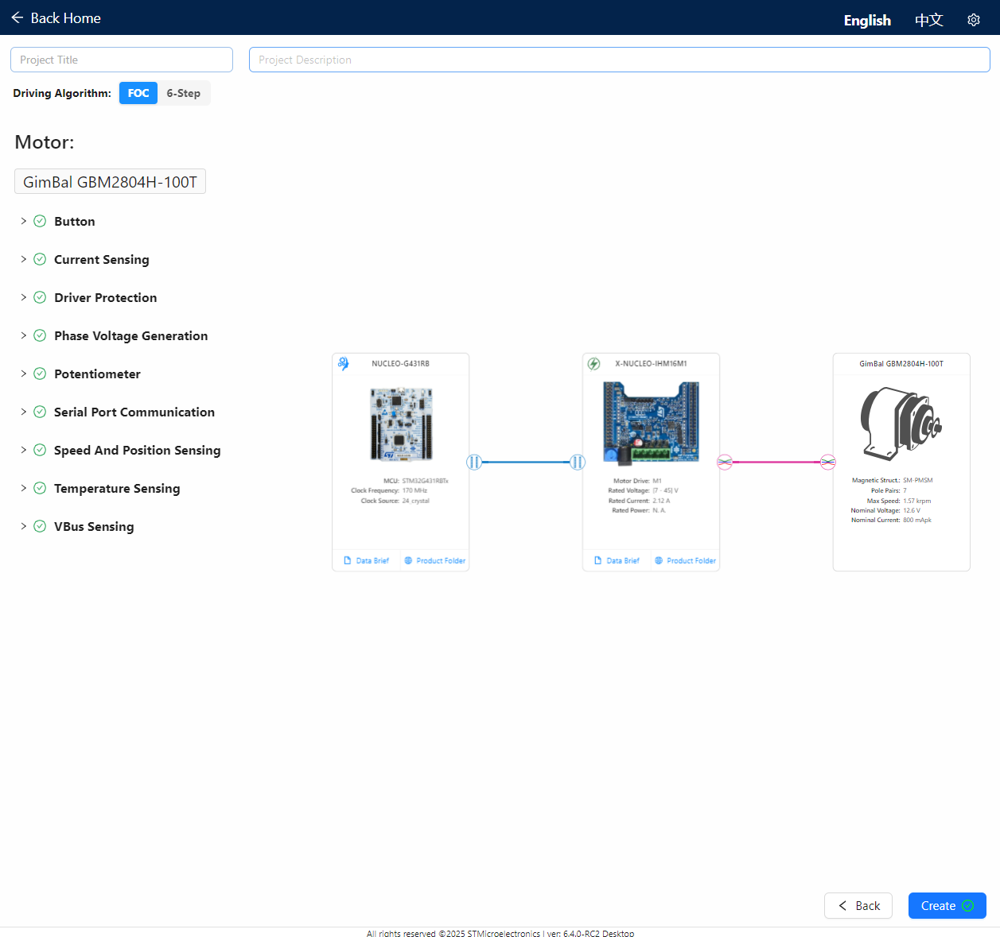
You can see that once you have saved your project, it appears on the home page in the recent project list card. The number of motors is indicated by the card, as the algorithm (FOC or 6-Step) and the project hardware type. Depending on whether you choose the FOC or 6-step algorithm, you do not have the same display and the same configuration mainly in the Drive settings section.
The main project view is displayed when a project or example is loaded or when a new project is created. The following parts are available:
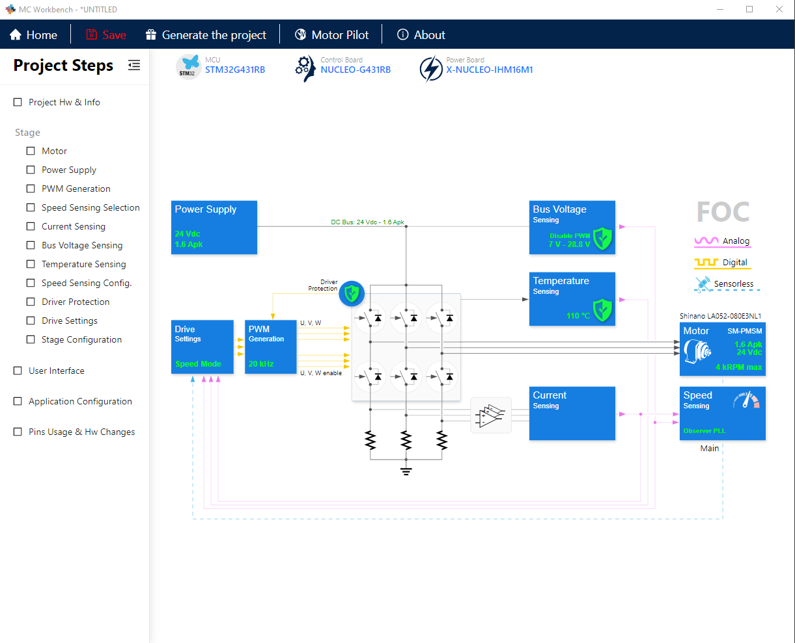
To give you complete control over your project, a wizard helps you while building your project. The wizard is a guided tour of the project. some mains concepts are listed here:
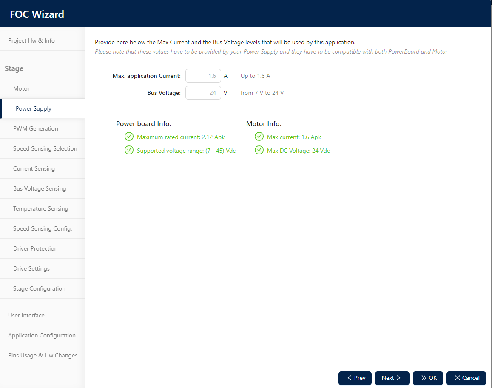
Finally, from the toolbar, you can click on the button “Generate the project”. A window helps you to choose the IDE to use and the drive type appears. Modify the settings if you want and then click on “Generate”. A project for the specific toolchain is provided and the firmware can be compiled, and the board is flashed.
More information about the ST MC workbench is provided in the Motor Control Workbench User Manual.
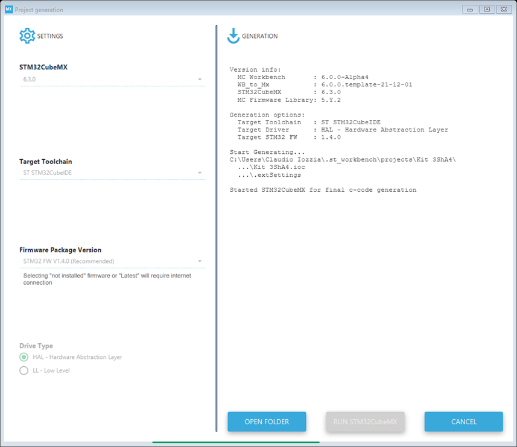
The MC Workbench generates a STM32CubeMX project file (IOC file) and launches cubeMX in background to generate the project for your selected Toolchain with your selected FW driver (HAL or LL) Once the generation is completed your project is ready to be open by your IDE and must be compiled. The last step is to run the code: Download the embedded application to the target from the IDE. If the ST/LINK is correctly installed, this is straightforward to perform. And after that, it is time to test your application.
If you want to add custom code, be aware that only code inside the users’ sections remains there after generation. However, any custom code added outside the users’ sections is deleted. Don't forget to re-compile and re-flash your project after each code generation.
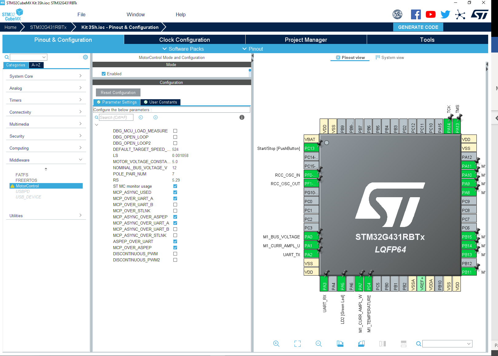
The STM32 MC motor pilot is a control and monitoring PC tool. The serial communication between the motor-control firmware and the PC is managed with the STM32 motor pilot. It allows you to send basic commands such as start and stop, setting target speed, and clearing fault conditions. The ST Motor Pilot is fully documented in the MC Motor Pilot Start-up guide from our Wiki pages.
When you start Motor Pilot for the first time , you can choose 3 different actions:
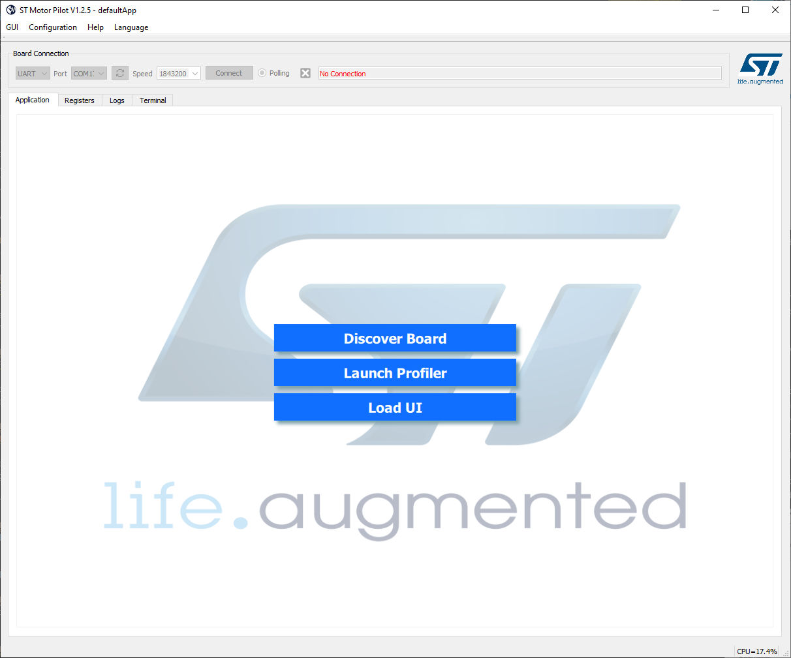
If the discovering is successful the corresponding UI is loaded. The use case presented in the image below is the FOC STO-PLL algorithm.
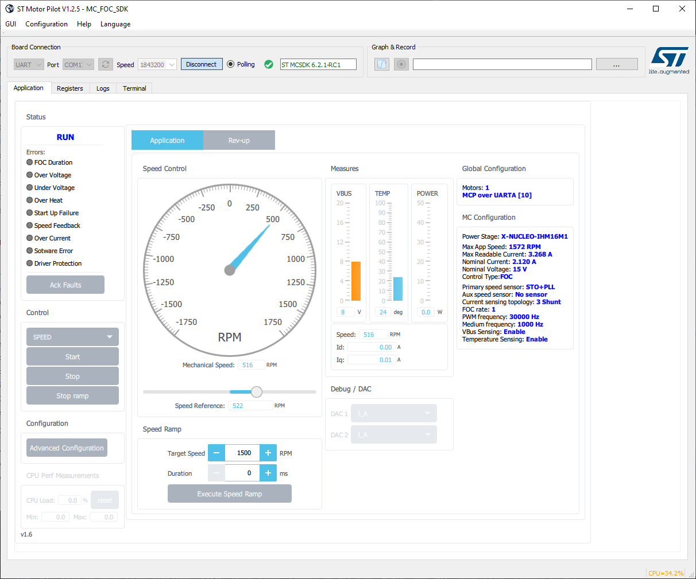
If you changed the UART baudrate when setting up your project, autodetection will fail. The solution is to manually load the UI corresponding to your configuration. Once the user interface is loaded, the Port and Speed fields are editable and must be configured according to your settings. The various proposed user interfaces are stored in the following folder : MC_SDK_6.2.1\Utilities\PC_Software\STMotorPilot\GUI
After that click on connect and then you can monitor your motor
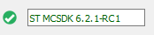
After the connection is established, you can click on the Start Motor button to run the motor, monitor the motor speed, and then click on the Stop Motor button to stop the motor.
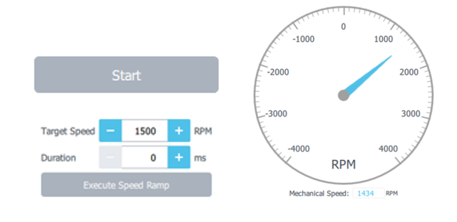
You can select the speed control or the torque control and test other parameters. When the motor is spinning, you can view the graphs and get recordings of those graphs. You can select the parameters that interest you as input to your graphs.
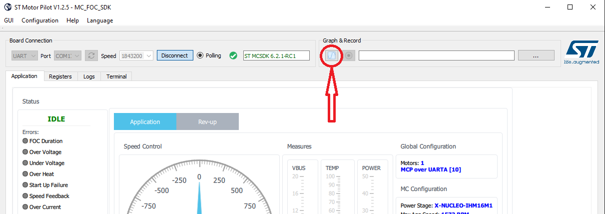
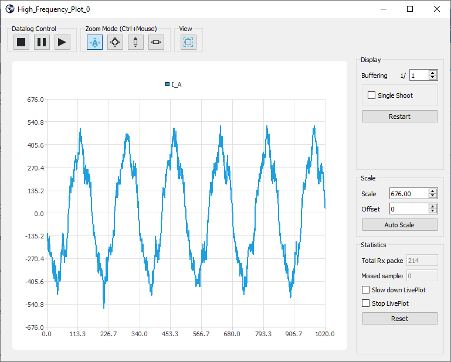
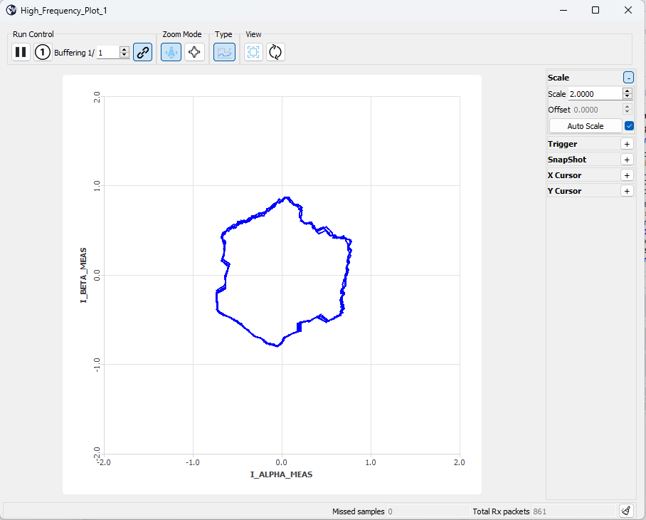
More information about the ST MC motor pilot is provided in the MC Motor Pilot Start-up guide from our Wiki pages..
The motor profiling algorithm is intended for rapid evaluation of the ST MC solution. It can be used to drive any three-phase PMSM without any specific instrument or special skill. Although the measurements performed are not as precise as with proper instrumentation, ST Motor Profiler measurements are optimized when:
Moreover, it is important to choose the appropriate hardware according to the characteristics of the motor. For instance, the maximum current of the motor must match the maximum current of the board as closely as possible. The ST Motor Profiler may be used only with compatible STMicroelectronics evaluation boards
Prev: STM32 motor control SDK overview ↤| Table of Contents |↦ Next: Motor Profiler Application Note